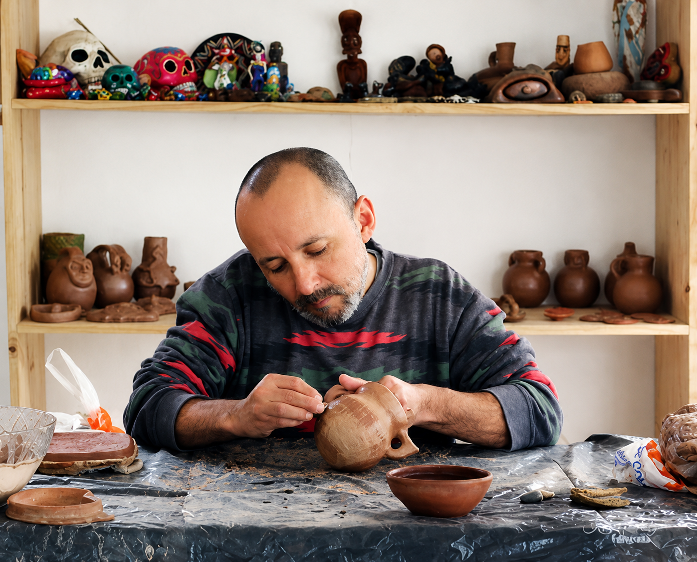
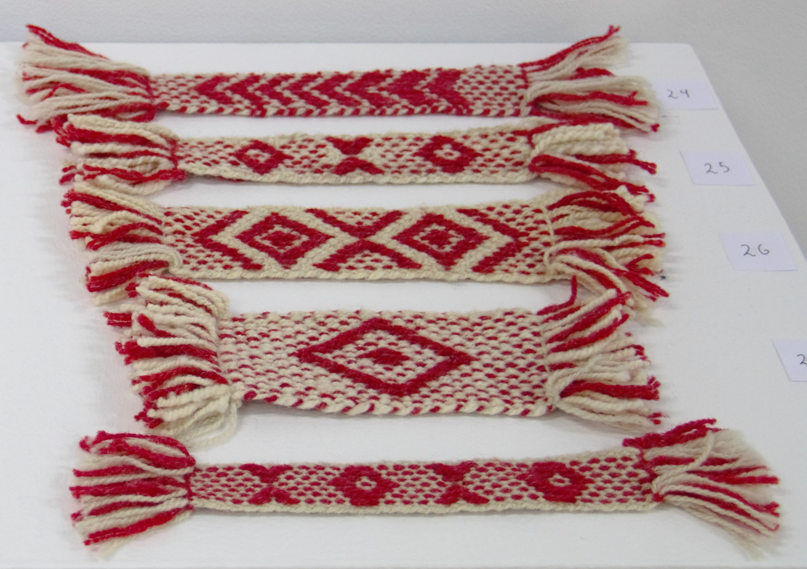

Urban Embroidery
Community art project in Calama (2012). Residents collectively embroidered a 3x2 meter map representing their dreams and stories.
Maximiliano 'Max' Sepúlveda Zúñiga (b. 1974) is a visual artist, artisan and cultural manager from San Vicente de Tagua Tagua, Chile. His work encompasses pottery, ceramics, textiles, collaborative art and audiovisual art direction, disciplines in which he has developed a broad creative output for over twenty years.
He trained alongside master artisans and visual artists from Latin America, complementing his learning in institutions in Chile, Argentina and Mexico. He conceives community and collaborative art as a tool for social transformation, therapy and food for the soul, drawing inspiration from the places and communities where he works to address social issues, collective memory and natural and cultural heritage.

Connecting with the community through sensitivity, creating bonds that go beyond the everyday. Community and collaborative art is a tool for social transformation.
A visual look at the techniques that run through his work.




As a cultural manager, Max Sepúlveda promotes projects that empower communities. He works alongside and across the community, generating spaces for social reflection and collective cooperation.
He has worked with institutions such as the Museo Violeta Parra, the Fundación Superación de la Pobreza and programs like Red Cultura.

Embroidery, murals and gatherings where the community becomes the author.


Community art, ceramics and textiles
Community art project in Calama (2012). Residents collectively embroidered a 3x2 meter map representing their dreams and stories.

Collective textile map of the coast of Rocha, Uruguay. Winner of the Competitive Funds for Culture from the Uruguayan MEC (2016).

Solo exhibition at the School of Art in Dunedin, New Zealand (2018). Dialogue between the cultural identity of Tagua Tagua and Māori tradition.

Research and rescue of indigenous pottery from central Chile. FONDART 2006 project.

Interventions where communities create murals from fabrics and embroideries installed in public spaces.
Textiles, pottery, garments and exhibition records ready to explore.


Ceramics, textiles, embroidery and workshop processes


Interested in collaborating, booking a workshop or purchasing artwork? Feel free to reach out.